Chapter 13 Descriptive tasks using bmbstats
In this chapter I will demonstrate the analysis of the basic descriptive tasks using bmbstats package. Each data set that we will analyze will be generated with the R code, so the underlying DGP will be transparent and thus very useful for understanding what we are trying to do with the analysis.
13.1 Generating height data
In [Comparing two independent groups] chapter we have used height data for 50 males and 50 females. This is how that data is generated:
require(bmbstats)
require(tidyverse)
set.seed(1667)
n_subjects <- 50
# Generate height data
height_data <- data.frame(
Male = rnorm(
n = n_subjects,
mean = 177.8,
sd = 10.16
),
Female = rnorm(
n = n_subjects,
mean = 165.1,
sd = 8.89
)
)
head(height_data)
#> Male Female
#> 1 193.9007 150.7703
#> 2 172.4291 150.0221
#> 3 186.3210 170.1512
#> 4 177.4417 156.4366
#> 5 167.5636 156.1961
#> 6 172.9078 158.946713.2 Visualization and analysis of a single group/variable
The simplest descriptive task is the description of a single group. Let’s use height of the females as an example. Function bmbstats::plot_raincloud37 can be used to plot the distribution and summary statistics (mean and SD as error bar):
bmbstats::plot_raincloud(
data = height_data,
value = "Female",
control = plot_control(group_colors = "pink")
)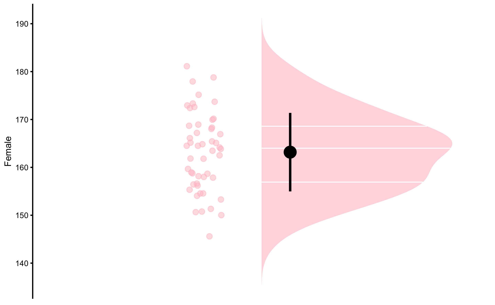
Functions in bmbstats package use control parameter to setup graphing or modeling parameters. For example, we can remove the quantile lines, resize points, change color by using bmbstats::plot_control function in the control parameter:
bmbstats::plot_raincloud(
data = height_data,
value = "Female",
control = plot_control(
group_colors = "grey",
cloud_quantile_lines = FALSE,
summary_bar_color = "red",
summary_bar_nudge = -0.15,
points_jitter_width = 0.1,
points_size = 2
)
)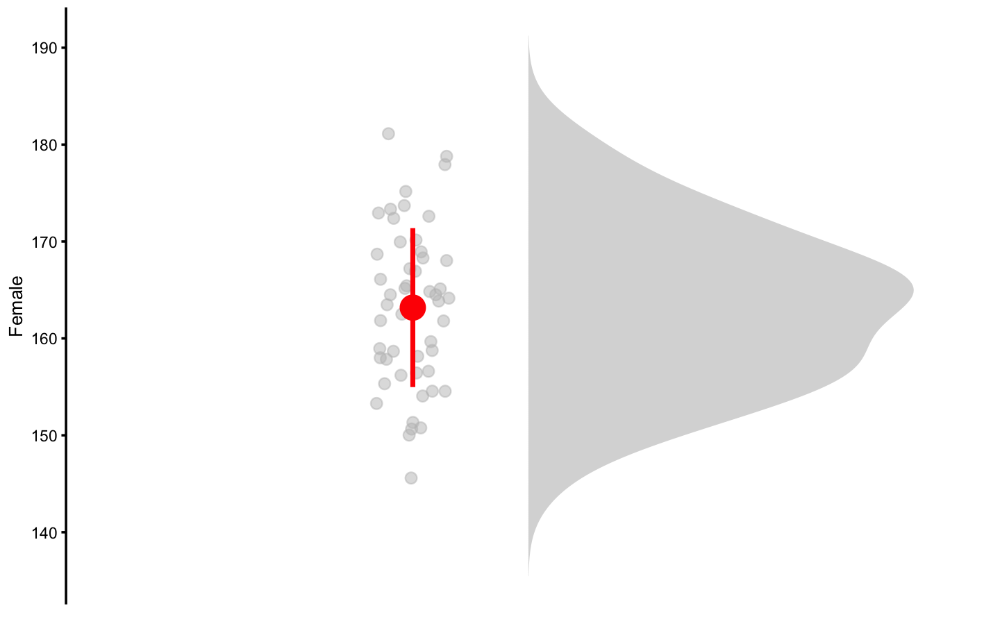
One of the core functions in bmbstats package is bmbstats::bmbstats, around which multiple wrapper functions are built, such as bmbstats::describe_data. bmbstats::describe_data performs bootstrap using the estimators provided in the estimator_function parameter. To modify bootstrap parameters, use control parameter and bmbstats::model_control function:
female_analysis <- bmbstats::describe_data(
x = height_data$Female,
estimator_function = bmbstats::data_estimators_simple,
control = model_control(
seed = 1667,
boot_type = "perc",
boot_samples = 1000,
confidence = 0.9
)
)
female_analysis
#> Bootstrap with 1000 resamples and 90% perc confidence intervals.
#>
#> estimator value lower upper
#> mean 163.177916 161.200476 165.143065
#> SD 8.199373 6.914061 9.136136The above code uses bmbstats::data_estimators_simple function that returns mean and SD estimators. If you want to access the data frame containing estimators values and upper and lower confidence thresholds use the following code:
Since we have generated the data, we know the true population parameters for the mean (165.1cm) and SD (8.89cm), and we are hoping that our 90% confidence intervals capture those values in 90% of the cases in the long run (i.e. have 10% Type I error).
To plot bootstrap distributions, use simple plot function:
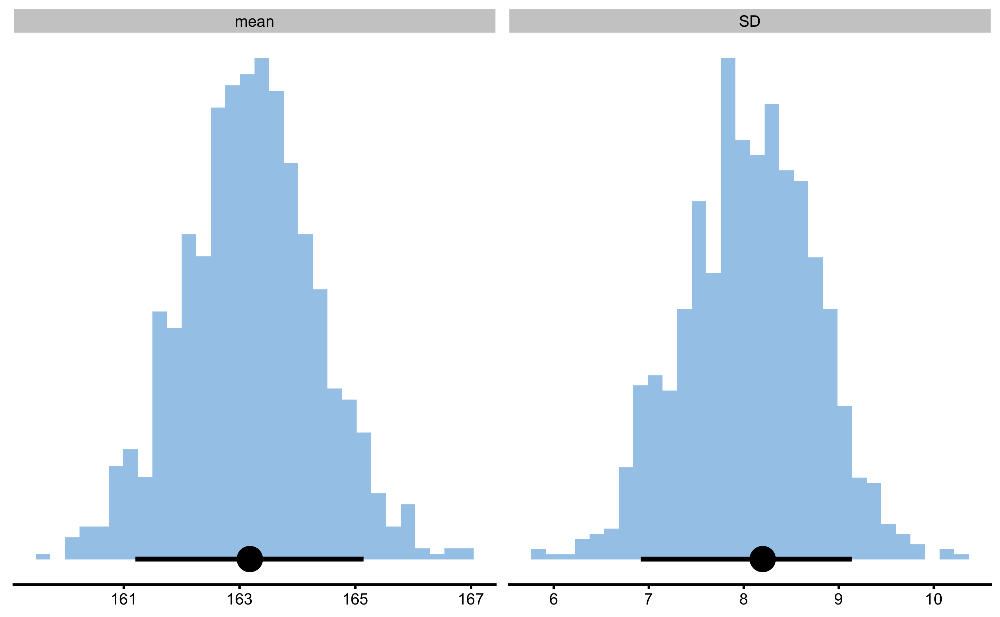
The figure above depicts distribution of the bootstrap resamples with the error bar representing estimator value and upper and lower confidence thresholds (in this case 90% estimated using percentile method). To change the colors, use control and plot_control:
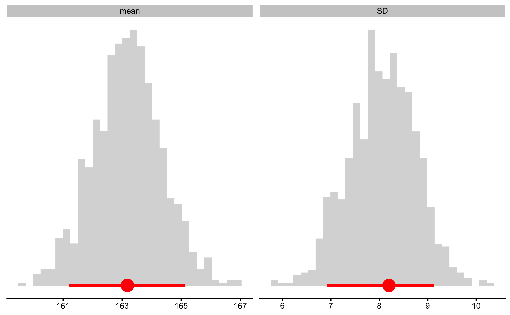
13.2.1 Using your own estimators
bmbstats functions are modular, implying that you can use different modules that you write yourself. This includes estimators function, but also performance functions (covered later when discussing prediction using bmbstats). Let’s say we are interested in the calculating mean, SD, and CV% (coefficient of variation):
my_estimators <- function(x, na.rm = FALSE) {
x_mean <- mean(x, na.rm = na.rm)
x_sd <- sd(x, na.rm = na.rm)
x_cv <- (x_sd / x_mean) * 100
return(c(
mean = x_mean,
SD = x_sd,
CV = x_cv
))
}If we apply this function to female heights, we get the following estimates:
Since we are interested in making statistical inference (by utilizing bootstrap method), we can simple replace bmbstats::data_estimators_simple with my_estimators:
female_analysis_my_est <- bmbstats::describe_data(
x = height_data$Female,
estimator_function = my_estimators,
control = model_control(
seed = 1667,
boot_type = "perc",
boot_samples = 1000,
confidence = 0.9
)
)
female_analysis_my_est
#> Bootstrap with 1000 resamples and 90% perc confidence intervals.
#>
#> estimator value lower upper
#> mean 163.177916 161.200476 165.143065
#> SD 8.199373 6.914061 9.136136
#> CV 5.024806 4.240318 5.600490
bmbstats::describe_data comes with three estimator functions: bmbstats::data_estimators, bmbstats::data_estimators_simple, and bmbstats::data_estimators_robust. Let’s run the bmbstats::data_estimators and bmbstats::data_estimators_robust, but this time using bca method of estimating 95% bootstrap confidence intervals (CIs):
female_analysis_extensive <- bmbstats::describe_data(
x = height_data$Female,
estimator_function = bmbstats::data_estimators,
control = model_control(
seed = 1667,
boot_type = "bca",
boot_samples = 2000,
confidence = 0.95
)
)
female_analysis_extensive
#> Bootstrap with 2000 resamples and 95% bca confidence intervals.
#>
#> estimator value lower upper
#> mean 163.177916 160.913435 165.332557
#> SD 8.199373 7.017929 9.874733
#> CV % 5.024806 4.293769 6.039070
#> median 164.003882 158.851885 165.294917
#> mode 164.940229 156.333306 170.084573
#> MAD 8.857033 6.340600 12.163640
#> IQR 11.669487 8.447784 16.327453
#> min 145.593392 NA NA
#> max 181.121685 175.163488 181.121685
#> range 35.528292 28.764563 35.528292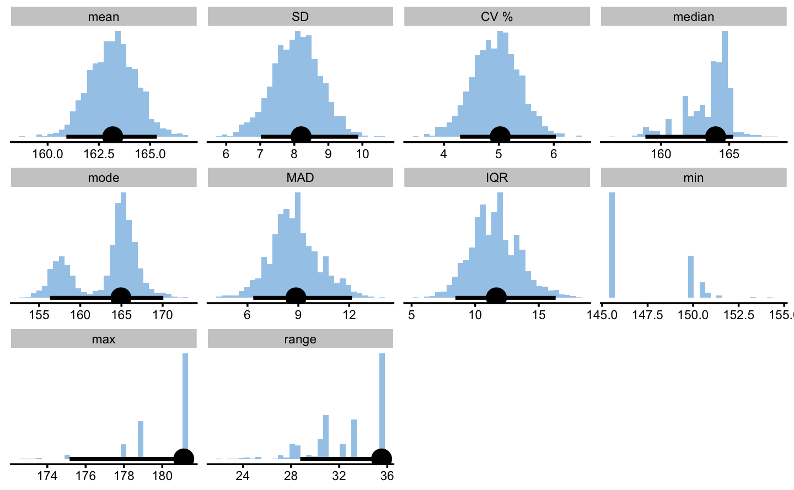
As can be seen from the bootstrap estimators distribution, some estimators, like mode, median, min, max and range have weird distribution and their CIs should not be trusted.
Robust estimators is a family of estimators that are robust to outliers. Here I will use median and 10 and 20% trimmed mean. Trimming involves removing certain percentage of top and bottom observations from the sample, which removes potential outliers.
female_analysis_robust <- bmbstats::describe_data(
x = height_data$Female,
estimator_function = bmbstats::data_estimators_robust,
control = model_control(
seed = 1667,
boot_type = "bca",
boot_samples = 2000,
confidence = 0.95
)
)
female_analysis_robust
#> Bootstrap with 2000 resamples and 95% bca confidence intervals.
#>
#> estimator value lower upper
#> median 164.003882 158.851885 165.29492
#> MAD 8.857033 6.340600 12.16364
#> IQR 11.669487 8.447784 16.32745
#> 10% trimmed mean 163.095407 160.630145 165.42765
#> 20% trimmed mean 163.020558 160.356299 165.52687
The simplicity of the bootstrap is that it can provide CIs for any estimator you can think of. But as always, Devil is in the details and some CIs for certain estimators (or small sample sizes) cannot be trusted and can be biased. This topic is beyond this book. The easiest test you can do is to run a simulation and see if the Type I error rates are not inflated.
To summarize the analysis of the single sample, let’s say that I am interested in estimating proportion of the females taller than 180cm in the population using the sample acquired. I can easily write my own estimator function and use normal or t-distribution to estimate the proportion, then plug that into the bootstrap to get CIs:
# Estimators function
prop_estimators <- function(x, na.rm = false) {
mean_x <- mean(x, na.rm = na.rm)
sd_x <- sd(x, na.rm = na.rm)
n_x <- length(x)
# Use t-distribution to calculate proportion over 180cm
prop_t <- 1 - pt((180 - mean_x) / sd_x, df = n_x - 1)
# Use normal distribution to calculate proportion over 180cm
prop_norm <- 1 - pnorm(180, mean = mean_x, sd = sd_x)
# Use `brute-force` (simple counting) to calculate proportion over 180cm
prop_brute <- sum(x > 180) / n_x
return(c(
"mean" = mean_x,
"SD" = sd_x,
"Over 180cm proportion (t-distr)" = prop_t,
"Over 180cm proportion (norm-distr)" = prop_norm,
"Over 180cm proportion (brute-force)" = prop_brute
))
}
tall_females <- bmbstats::describe_data(
x = height_data$Female,
estimator_function = prop_estimators,
control = model_control(
seed = 1667,
boot_type = "bca",
boot_samples = 2000,
confidence = 0.95
)
)
tall_females
#> Bootstrap with 2000 resamples and 95% bca confidence intervals.
#>
#> estimator value lower upper
#> mean 163.17791620 1.609134e+02 165.33255732
#> SD 8.19937316 7.017929e+00 9.87473324
#> Over 180cm proportion (t-distr) 0.02278501 7.860132e-03 0.05965420
#> Over 180cm proportion (norm-distr) 0.02010279 6.171549e-03 0.05644849
#> Over 180cm proportion (brute-force) 0.02000000 0.000000e+00 0.06000000
13.3 Visualization and analysis of the two independent groups
Estimators for each independent group (e.g. males and females) can be visualized side by side. For example, we might be interested in visualizing mean, SD and proportion over 180cm for males vs. females:
tall_males <- bmbstats::describe_data(
x = height_data$Male,
estimator_function = prop_estimators,
control = model_control(
seed = 1667,
boot_type = "bca",
boot_samples = 2000,
confidence = 0.95
)
)
compare_groups <- rbind(
data.frame(group = "females", tall_females$estimators),
data.frame(group = "males", tall_males$estimators)
)
ggplot(
compare_groups,
aes(y = group, x = value)
) +
theme_bw(8) +
geom_errorbarh(aes(xmax = upper, xmin = lower),
color = "black",
height = 0
) +
geom_point() +
xlab("") +
ylab("") +
facet_wrap(~estimator, scales = "free_x")
As can be seen from the figure, males have higher mean height, higher SD (but not sure if it is statistically significant nor practically significant - you can check this later with a few bmbstats functions) and higher proportion of individual over 180cm.
Rather than comparing individual group estimates, we can perform independent group analysis using bmbstats::compare_independent_groups. But before we do that, let’s plot the groups using bmbstats::plot_raincloud function. To do that, we need to convert our wide height data to long format:
height_data_long <- gather(
height_data,
key = "Gender",
value = "Height"
)
# Order factors
height_data_long$Gender <- factor(
height_data_long$Gender,
levels = c("Male", "Female")
)
head(height_data_long)
#> Gender Height
#> 1 Male 193.9007
#> 2 Male 172.4291
#> 3 Male 186.3210
#> 4 Male 177.4417
#> 5 Male 167.5636
#> 6 Male 172.9078And now we can plot the group height distribution:

To perform descriptive analysis of the independent groups, we will use bmbstats::compare_independent_groups function. This function use estimator function bmbstats::independent_groups_estimators that provide all the major estimators introduced in the [Comparing dependent groups] section. For the SESOI we will use 2.5cm, like we have done in the [Comparing dependent groups] section as well:
independent_groups_estimators(
group_a = height_data$Female,
group_b = height_data$Male,
SESOI_lower = -2.5,
SESOI_upper = 2.5
)
#> SESOI lower SESOI upper SESOI range Mean diff
#> -2.50000000 2.50000000 5.00000000 12.72521903
#> SD diff SD pooled %CV diff % diff
#> 12.41402468 8.77804103 97.55450689 7.79837084
#> Ratio Cohen's d CLES OVL
#> 1.07798371 1.44966502 0.84733444 0.46855479
#> Mean diff to SESOI SD diff to SESOI pLower pEquivalent
#> 2.54504381 2.48280494 0.11148343 0.09457649
#> pHigher
#> 0.79394008bmbstats::compare_independent_groups uses by default the bmbstats::independent_groups_estimators, but we can write our own estimators function a bit later:
males_females_comp <- compare_independent_groups(
group_a = height_data$Female,
group_b = height_data$Male,
SESOI_lower = -2.5,
SESOI_upper = 2.5
)
#> [1] "All values of t are equal to 2.5 \n Cannot calculate confidence intervals"
#> [1] "All values of t are equal to 5 \n Cannot calculate confidence intervals"
males_females_comp
#> Bootstrap with 2000 resamples and 95% bca confidence intervals.
#>
#> estimator value lower upper
#> SESOI lower -2.50000000 NA NA
#> SESOI upper 2.50000000 NA NA
#> SESOI range 5.00000000 NA NA
#> Mean diff 12.72521903 9.08380753 16.0686119
#> SD diff 12.41402468 11.10081268 14.1287776
#> SD pooled 8.77804103 7.84945992 9.9905544
#> %CV diff 97.55450689 75.67596790 145.1388909
#> % diff 7.79837084 5.48856008 9.9411055
#> Ratio 1.07798371 1.05488560 1.0994111
#> Cohen's d 1.44966502 0.97452326 1.8701976
#> CLES 0.84733444 0.75460141 0.9069431
#> OVL 0.46855479 0.34974837 0.6260860
#> Mean diff to SESOI 2.54504381 1.81676151 3.2137224
#> SD diff to SESOI 2.48280494 2.22016254 2.8257555
#> pLower 0.11148343 0.06449905 0.1926671
#> pEquivalent 0.09457649 0.06862640 0.1250760
#> pHigher 0.79394008 0.68781913 0.8655902
You can notice that SESOI threshold doesn’t have any bootstrap distribution. That is because we have provide a priori SESOI. We can also estimate SESOI within the bootstrap loop. For SESOI we can use pooled SD of the group_a and group_b multiplied by 0.2, which represents Cohen’s trivial magnitude. This is the default behavior of the bmbstats::compare_independent_groups and other similar functions. You can write your own function for estimating SESOI by providing function argument to SESOI_lower and SESOI_upper parameters. For the sake of example, I will do that here, but only for the SESOI_upper and will stick to -2.5cm for the SESOI_lower:
males_females_comp_est <- compare_independent_groups(
group_a = height_data$Female,
group_b = height_data$Male,
SESOI_lower = -2.5,
SESOI_upper = function(group_a, group_b, na.rm) {
sd(group_a, na.rm = na.rm) * 0.2
}
)
males_females_comp_est
#> Bootstrap with 2000 resamples and 95% bca confidence intervals.
#>
#> estimator value lower upper
#> SESOI lower -2.50000000 NA NA
#> SESOI upper 1.63987463 1.40101324 1.94141198
#> SESOI range 4.13987463 3.90101324 4.44141198
#> Mean diff 12.72521903 9.39979860 16.07945845
#> SD diff 12.41402468 11.12171677 14.08901524
#> SD pooled 8.77804103 7.86424134 9.96243822
#> %CV diff 97.55450689 74.22144558 135.97174823
#> % diff 7.79837084 5.72302737 9.95978160
#> Ratio 1.07798371 1.05723027 1.09959782
#> Cohen's d 1.44966502 1.04057626 1.90567697
#> CLES 0.84733444 0.76901630 0.91107613
#> OVL 0.46855479 0.34069164 0.60291087
#> Mean diff to SESOI 3.07381749 2.26756237 3.95663372
#> SD diff to SESOI 2.99864749 2.72442801 3.34078108
#> pLower 0.11148343 0.06178746 0.17758243
#> pEquivalent 0.07554712 0.05221579 0.09808881
#> pHigher 0.81296945 0.72639255 0.88497505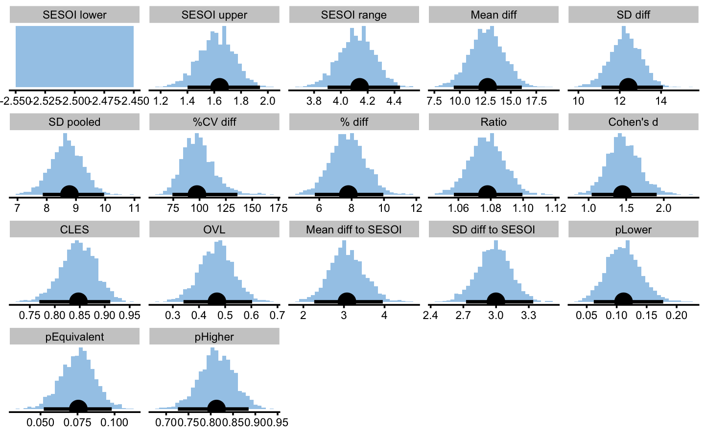
You can now notice that SESOI upper and SESOI range have bootstrap distribution. It is important that if we estimate SESOI from the obtained sample, the SESOI estimation must be in the bootstrap loop, and our uncertainty about it’s estimate must be propagated to other estimators that uses SESOI (e.g. pLower, pEquivalent, pHigher). To demonstrate the difference, consider the following two analyses using different SESOI estimation. One estimates SESOI inside the bootstrap loop, and the other estimates SESOI outside the bootstrap loop. To make sure the same bootstrap is performed, we will set the same seed parameter:
# SESOI estimated inside the bootstrap loop
males_females_comp_inside <- compare_independent_groups(
group_a = height_data$Female,
group_b = height_data$Male,
SESOI_lower = function(group_a, group_b, na.rm) {
-sd(group_a, na.rm = na.rm) * 0.2
},
SESOI_upper = function(group_a, group_b, na.rm) {
sd(group_a, na.rm = na.rm) * 0.2
},
control = model_control(seed = 1667)
)
# SESOI estimated outside the bootstrap loop
males_females_comp_outside <- compare_independent_groups(
group_a = height_data$Female,
group_b = height_data$Male,
SESOI_lower = -sd(height_data$Female) * 0.2,
SESOI_upper = sd(height_data$Female) * 0.2,
control = model_control(seed = 1667)
)
#> [1] "All values of t are equal to 1.63987463256618 \n Cannot calculate confidence intervals"
#> [1] "All values of t are equal to 3.27974926513235 \n Cannot calculate confidence intervals"
# Plot the estimators
compare_analyses <- rbind(
data.frame(group = "inside", males_females_comp_inside$estimators),
data.frame(group = "outside", males_females_comp_outside$estimators)
)
ggplot(
compare_analyses,
aes(y = group, x = value)
) +
theme_bw(8) +
geom_errorbarh(aes(xmax = upper, xmin = lower),
color = "black",
height = 0
) +
geom_point() +
xlab("") +
ylab("") +
facet_wrap(~estimator, scales = "free_x")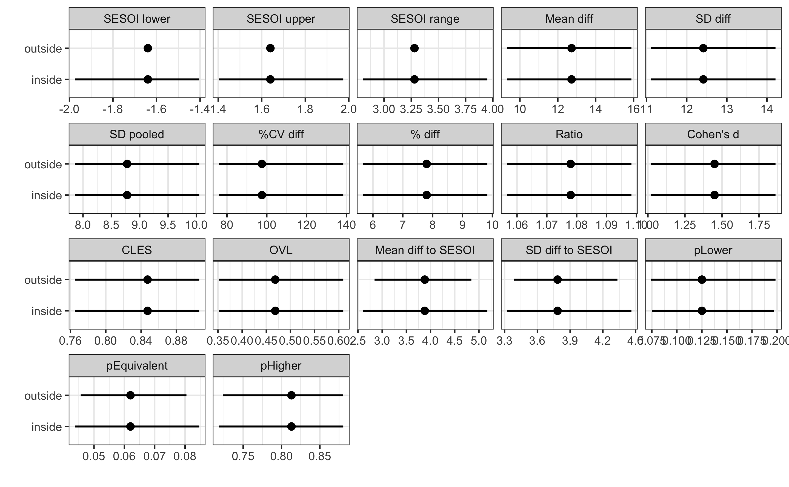
The difference in CIs for the estimators that uses SESOI (i.e. magnitude-based estimators) is not staggering, but CIs are wider for the inside method (for example, compare Mean diff to SESOI estimator).
13.4 NHST, METs and MBI functions
Is there are statistically significant difference in the mean height between males and females? As explained in the [Statistical inference] and [Bootstrap] chapters, we can derive p-value using bootstrap resamples. Let’s test the Null Hypothesis that mean difference between males and females is 0. To do that we will used bmbstats::bootstrap_NHST function that demands us to select estimator of interest using estimator parameter. bmbstats::bootstrap_NHST uses the result object from the bmbstats::compare_independent_groups function:
males_females_NHST <- bmbstats::bootstrap_NHST(
males_females_comp,
estimator = "Mean diff",
null_hypothesis = 0,
test = "two.sided"
)
males_females_NHST
#> Null-hypothesis significance test for the `Mean diff` estimator
#> Bootstrap result: Mean diff=12.725, 95% CI [9.084, 16.069]
#> H0=0, test: two.sided
#> p=0.000499750124937531As can be seen, the p-value is below 0.05 (i.e. alpha), so we can conclude that the mean difference is statistically significant.
What if our hypothesis is that males are taller by females by at least 10cm? We can also test that hypothesis using one-sided NHST:
males_females_NHST <- bmbstats::bootstrap_NHST(
males_females_comp,
estimator = "Mean diff",
null_hypothesis = 10,
test = "greater"
)
males_females_NHST
#> Null-hypothesis significance test for the `Mean diff` estimator
#> Bootstrap result: Mean diff=12.725, 95% CI [9.084, 16.069]
#> H0=10, test: greater
#> p=0.0535Estimated p-value is slightly over 0.05, so we do not reject the Null Hypothesis. This is interesting result, particularly since we know that the true mean difference is around 12.7cm (true mean height for males is 177.8cm and for females is 165.1cm). It could be that this sample size is under-powered to detect this small difference between Null Hypothesis (i.e. >10cm) and Alternative Hypothesis - true difference in this case - of 12.7cm. This topic is discussed in the [Statistical Power]. This could easily be tested with a simulation, althought that is beyond the scope of this chapter.
Graphically, this test looks like this:
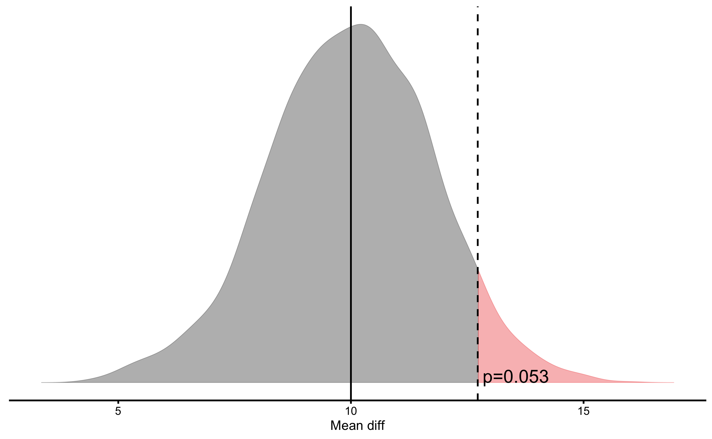
In the above graph, the estimator bootstrap distribution (i.e. mean difference) is centered around Null Hypothesis (i.e. 10cm). If we perform this same test, but using two sided NHST (which is default), we will the the following result and plot:
males_females_NHST <- bmbstats::bootstrap_NHST(
males_females_comp,
estimator = "Mean diff",
null_hypothesis = 10
)
plot(males_females_NHST)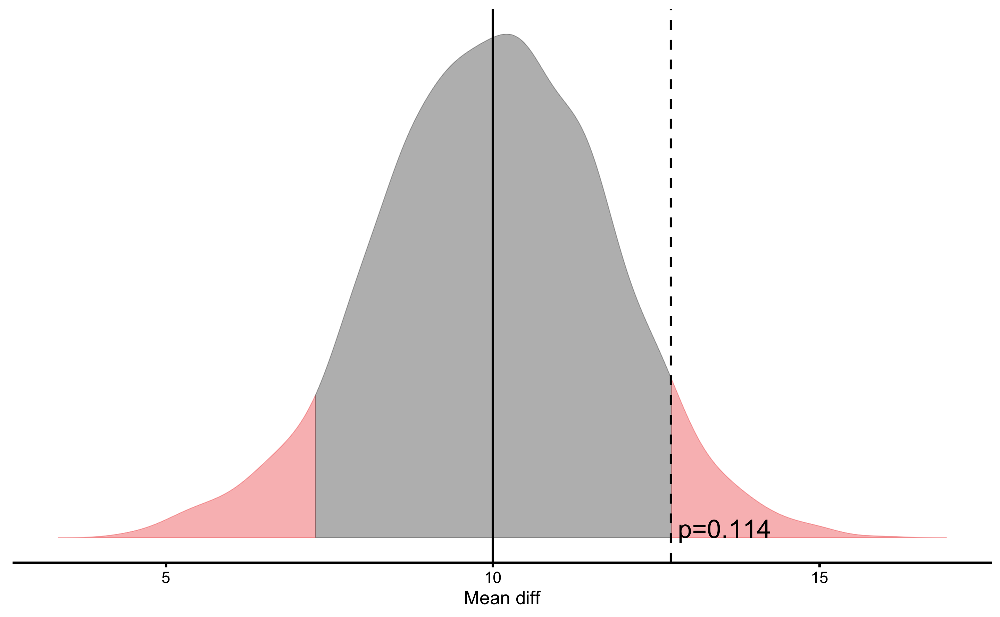
We have already decided that our SESOI in height is 2.5cm. But this SESOI is related to individual observations, not necessary to estimators (i.e. mean difference). This topic is discussed in the [Individual vs. Parameter SESOI] section of this book. Let’s use 10cm as SESOI for the mean difference estimator and perform METs using bmbstats::bootstrap_MET function and alpha level set to 0.05:
males_females_MET <- bmbstats::bootstrap_MET(
males_females_comp,
estimator = "Mean diff",
SESOI_lower = -10,
SESOI_upper = 10,
alpha = 0.05
)
males_females_MET
#> Minimum effect tests for the `Mean diff` estimator
#> Bootstrap result: Mean diff=12.725, 95% CI [9.084, 16.069]
#> SESOI: [-10, 10], alpha=0.05
#>
#> Test p.value
#> inferiority 1.0000000000
#> non-superiority 0.9465000000
#> equivalence 0.9465000000
#> non-inferiority 0.0004997501
#> superiority 0.0535000000
#>
#> Final inference: Not-LowerAs can be seen from the result of the MET analysis, the final inference is that male height is “not lower” than female height using SESOI of 10cm. I personally prefer this to be conveyed visually by using plot function:

We can also plot each individual MET test, for example equivalence and non-inferiority tests:
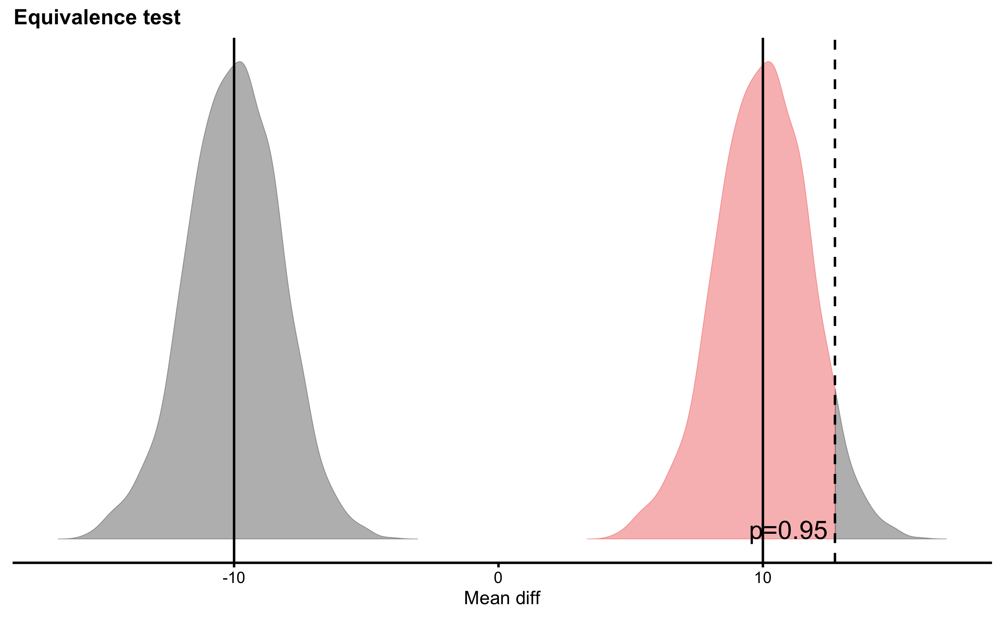
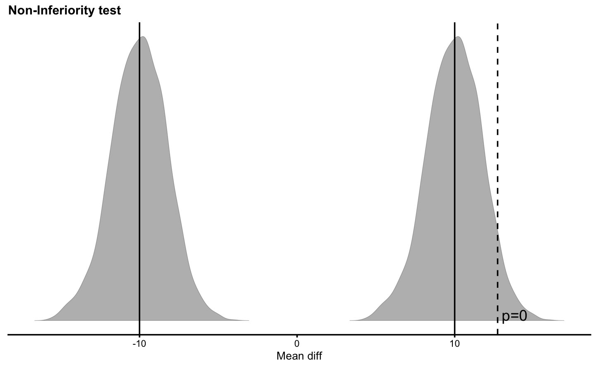
What if I decide about different SESOI values or different Null Hypothesis or even alpha levels? Well, that is and example of p-harking discussed in the [Statistical Power] section. P-harking represents hypothesizing after results are known, or in other words tuning your analysis to be more acceptable for publications. That’s why it is important for the confirmatory studies to have all the threshold and the analysis a priori defined or pre-registered.
To perform MBI, use bmbstats::bootstrap_MBI function:
males_females_MBI <- bmbstats::bootstrap_MBI(
males_females_comp,
estimator = "Mean diff",
SESOI_lower = -10,
SESOI_upper = 10
)
males_females_MBI
#> Magnitude-based inference for the `Mean diff` estimator
#> Bootstrap result: Mean diff=12.725, 95% CI [9.084, 16.069]
#> SESOI: [-10, 10]
#>
#> Test prob
#> lower 0.00
#> equivalent 0.06
#> higher 0.94
#>
#> Final inference: Likely higherThe final inference of the MBI is “likely higher” mean difference. As always, plotting is much more informational:

13.5 Comparing two dependent groups
13.5.1 Measurement error issues
In the [Description] chapter, to showcase comparison between two dependent groups, bench press data involving Pre-test and Post-test observations were used. Let’s create that data-set here. To demonstrate measurement error effects, on top of true Pre- and Post- 1RM test scores, I will add measurement error that is normally distributed with SD equal to 2.5kg. In the first example, there will be no systematic nor random change between Pre-test and Post-test, thus measurement error will be solely responsible for the observed change (although there will be no true change).
set.seed(1666)
n_subjects <- 20
measurement_error <- 2.5
systematic_change <- 0
random_change <- 0
bench_press_data <- tibble(
# Generate athlete name
Athlete = factor(paste(
"Athlete",
str_pad(
string = seq(1, n_subjects),
width = 2,
pad = "0"
)
)),
# True Pre-test
`Pre-test (true)` = rnorm(
n = n_subjects,
mean = 100,
sd = 7.5
),
# True Change
`Change (true)` = rnorm(
n = n_subjects,
mean = systematic_change,
sd = random_change
),
# True Post-test
`Post-test (true)` = `Pre-test (true)` + `Change (true)`,
# Observed Pre-test
`Pre-test (observed)` = `Pre-test (true)` +
# Add measurement error
rnorm(
n = n_subjects,
mean = 0,
sd = measurement_error
),
# Observed Post-test
`Post-test (observed)` = `Post-test (true)` +
# Add measurement error
rnorm(
n = n_subjects,
mean = 0,
sd = measurement_error
),
# Observed Change
`Change (observed)` = `Post-test (observed)` - `Pre-test (observed)`
)
bench_press_data
#> # A tibble: 20 x 7
#> Athlete `Pre-test (true… `Change (true)` `Post-test (tru… `Pre-test (obse…
#> <fct> <dbl> <dbl> <dbl> <dbl>
#> 1 Athlet… 111. 0 111. 112.
#> 2 Athlet… 102. 0 102. 108.
#> 3 Athlet… 93.4 0 93.4 90.8
#> 4 Athlet… 95.4 0 95.4 93.2
#> 5 Athlet… 111. 0 111. 111.
#> 6 Athlet… 110. 0 110. 109.
#> 7 Athlet… 104. 0 104. 105.
#> 8 Athlet… 93.7 0 93.7 94.5
#> 9 Athlet… 99.6 0 99.6 102.
#> 10 Athlet… 106. 0 106. 109.
#> 11 Athlet… 102. 0 102. 105.
#> 12 Athlet… 101. 0 101. 100.
#> 13 Athlet… 92.9 0 92.9 90.5
#> 14 Athlet… 98.2 0 98.2 96.5
#> 15 Athlet… 88.3 0 88.3 89.7
#> 16 Athlet… 106. 0 106. 109.
#> 17 Athlet… 95.8 0 95.8 98.2
#> 18 Athlet… 92.9 0 92.9 90.8
#> 19 Athlet… 103. 0 103. 104.
#> 20 Athlet… 104. 0 104. 107.
#> # … with 2 more variables: `Post-test (observed)` <dbl>, `Change
#> # (observed)` <dbl>Let’s plot the true Pre-test and Post-test scores using a scatter plot and SESOI band of -5 to 5kg:
plot_pair_changes(
group_a = bench_press_data$`Pre-test (true)`,
group_b = bench_press_data$`Post-test (true)`,
group_a_label = "True Pre-test",
group_b_label = "True Post-test",
SESOI_lower = -5,
SESOI_upper = 5
)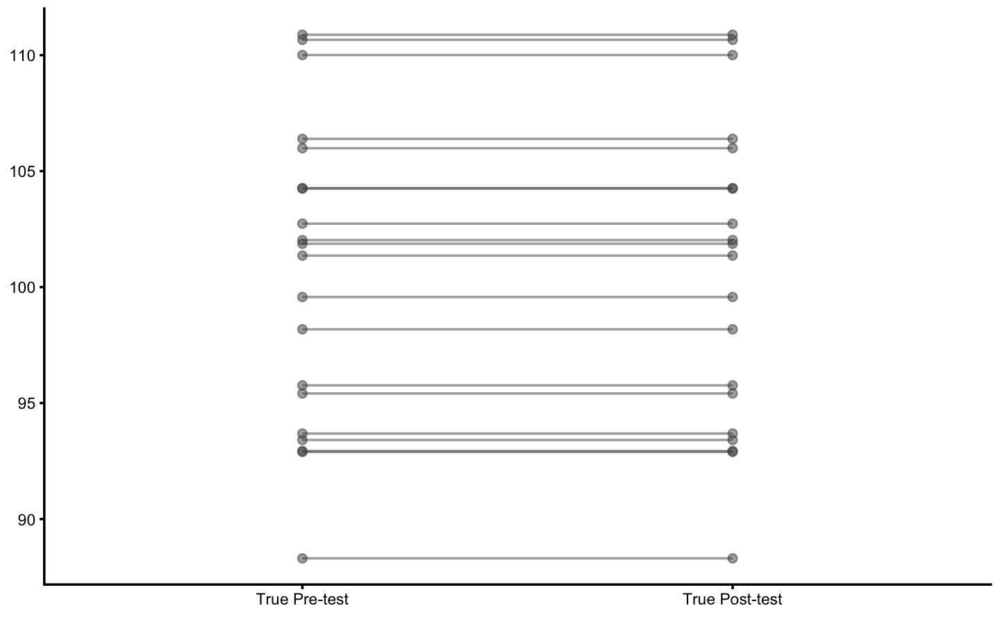
As can be seen, there is no true change. Let’s see what happens when we plot observed scores:
plot_pair_changes(
group_a = bench_press_data$`Pre-test (observed)`,
group_b = bench_press_data$`Post-test (observed)`,
group_a_label = "Observed Pre-test",
group_b_label = "Observed Post-test",
SESOI_lower = -5,
SESOI_upper = 5
)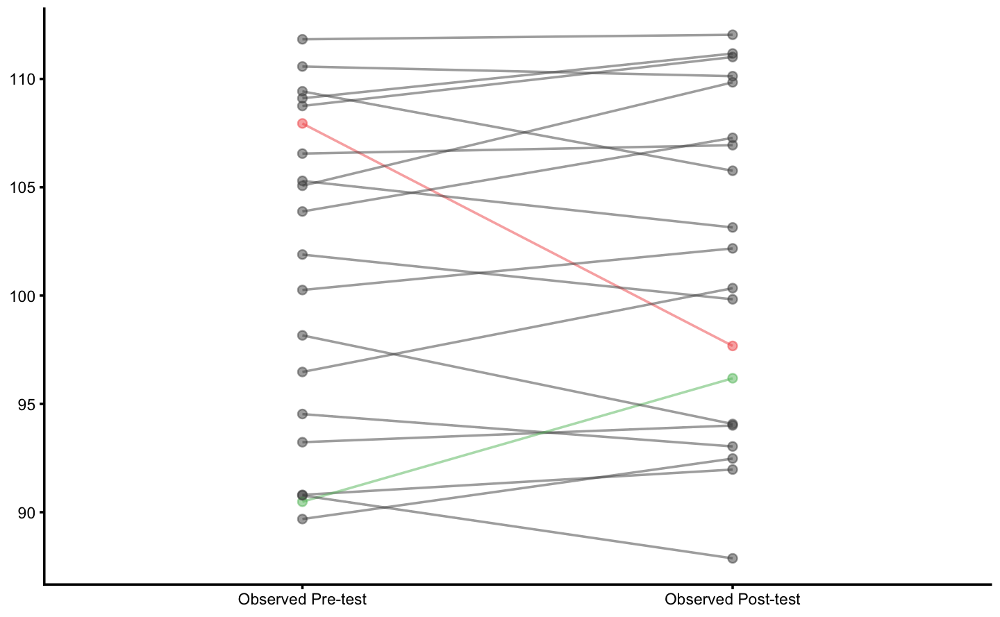
We can also plot distribution of the Change scores:
plot_raincloud_SESOI(
bench_press_data,
value = "Change (observed)",
SESOI_lower = -5,
SESOI_upper = 5
)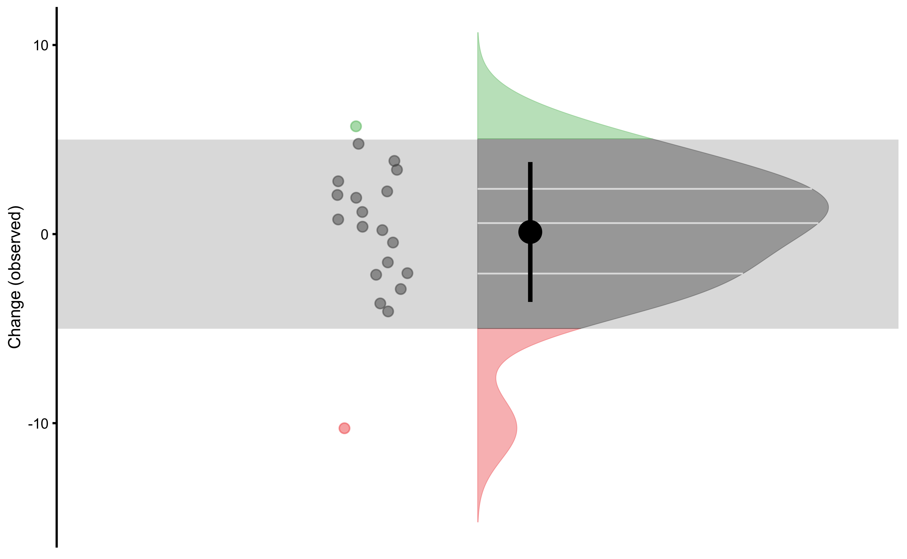
We would be very quick to claim that there are individuals that demonstrated higher or lower change (compared to SESOI). But remember that in this data set there is not true change - implying that all observed change is due to measurement error.
Since we know that there is no true change, let’s do the summary of the observed Change score:
Since we know that the measurement error is 2.5kg, the SD of the change score is expected to be \(2.5 \times \sqrt{2}\) or 3.54kg.
Using bmbstats::describe_data we can perform bootstrap CIs for the mean and SD of the Change score:
obs_change_analysis <- bmbstats::describe_data(
x = bench_press_data$`Change (observed)`,
estimator_function = bmbstats::data_estimators_simple,
control = model_control(
seed = 1667,
boot_type = "perc",
boot_samples = 1000,
confidence = 0.9
)
)
obs_change_analysis
#> Bootstrap with 1000 resamples and 90% perc confidence intervals.
#>
#> estimator value lower upper
#> mean 0.1114846 -1.397619 1.360018
#> SD 3.6995292 2.405751 4.775318The 90% CIs for the SD of the observed Change score captures expected change measurement error of 3.54kg. We will come back to this in the [Reliability] section.
Since we are aware of the measurement error involved in out observations, we can perform MBI and MET of the observed change scores. MBI can be performed using bmbstats::observations_MBI function. If we plot the result, confidence intervals (error bars) represent SDC (smallest detectable change), which is measurement error multiplied with appropriate critical value to get desired confidence level. On top of plotting MBI, I will also plot the true score using true_observations of the plot function (indicated by red line):
obs_change_MBI <- bmbstats::observations_MBI(
observations = bench_press_data$`Change (observed)`,
observations_label = bench_press_data$Athlete,
measurement_error = 2.5 * sqrt(2),
# Degrees of freedom from the reliability study. Use `Inf` for normal distribution
df = Inf,
SESOI_lower = -5,
SESOI_upper = 5,
confidence = 0.9
)
plot(
obs_change_MBI,
true_observations = bench_press_data$`Change (true)`,
control = plot_control(points_size = 5)
) +
xlim(-18, 20)
To perform METs, use bmbstats::observations_MET function:
obs_change_MET <- bmbstats::observations_MET(
observations = bench_press_data$`Change (observed)`,
observations_label = bench_press_data$Athlete,
measurement_error = 2.5 * sqrt(2),
# Degrees of freedom from the reliability study. Use `Inf` for normal distribution
df = Inf,
SESOI_lower = -5,
SESOI_upper = 5,
alpha = 0.05,
confidence = 0.9
)
plot(
obs_change_MET,
true_observations = bench_press_data$`Change (true)`,
control = plot_control(points_size = 5)
) +
xlim(-18, 20)
It seems like the Athlete 02 showed true Change, but since we generated the data we know that there is no true Change (also check the vertical red lines for the true Change scores). Thus, if we conclude that this individual showed lower change, we would be making Type I error. Since we are performing multiple individual tests, we could/should adjust the alpha parameter (e.g. by dividing it by number of tests, or in this case athletes - Bonferroni correction) to avoid inflating family-wise error rates, since particular athlete can show significant change due to chance alone (due to multiple comparisons/test). To do that, simply divide alpha by the number of athletes:
obs_change_MET <- bmbstats::observations_MET(
observations = bench_press_data$`Change (observed)`,
observations_label = bench_press_data$Athlete,
measurement_error = 2.5 * sqrt(2),
# Degrees of freedom from the reliability study. Use `Inf` for normal distribution
df = Inf,
SESOI_lower = -5,
SESOI_upper = 5,
alpha = 0.05 / n_subjects,
# Confidence could be adjusted as well
# but it is used mainly for plotting
confidence = 0.9
)
plot(
obs_change_MET,
true_observations = bench_press_data$`Change (true)`,
control = plot_control(points_size = 5)
) +
xlim(-18, 20)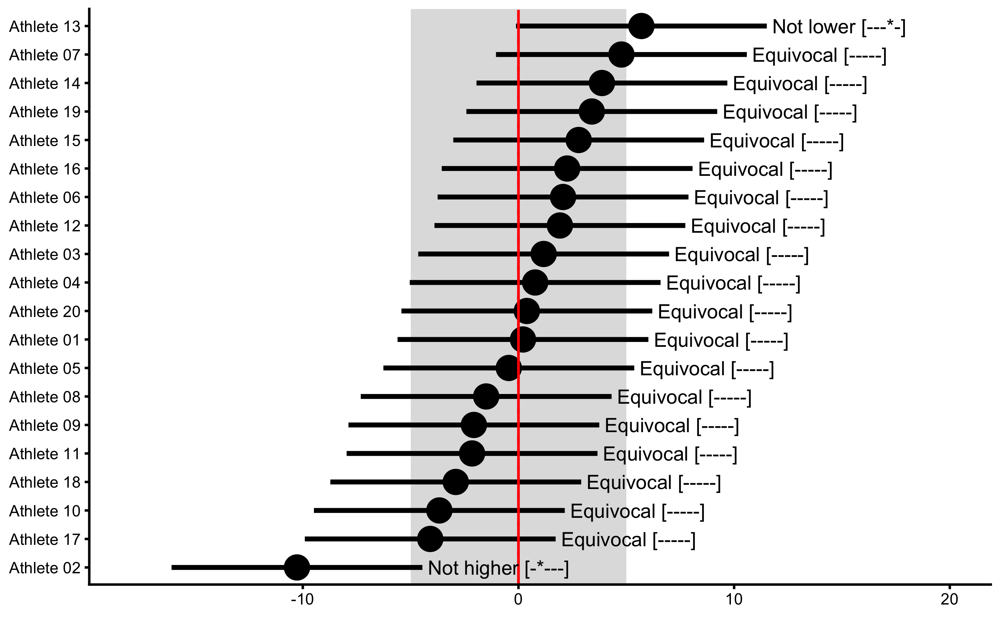
The point of this analysis is that we need to know measurement error to infer about true change in individuals. Since we do know that there is no real change in this example, we can see how measurement error cause cause wrong inferences about the true changes.
Let’s now generate the data with true changes, where systematic change is 10kg and random change is 10kg as well:
set.seed(1666)
n_subjects <- 20
measurement_error <- 2.5
systematic_change <- 10
random_change <- 10
bench_press_data <- tibble(
# Generate athlete name
Athlete = factor(paste(
"Athlete",
str_pad(
string = seq(1, n_subjects),
width = 2,
pad = "0"
)
)),
# True Pre-test
`Pre-test (true)` = rnorm(
n = n_subjects,
mean = 100,
sd = 7.5
),
# True Change
`Change (true)` = rnorm(
n = n_subjects,
mean = systematic_change,
sd = random_change
),
# True Post-test
`Post-test (true)` = `Pre-test (true)` + `Change (true)`,
# Observed Pre-test
`Pre-test (observed)` = `Pre-test (true)` +
# Add measurement error
rnorm(
n = n_subjects,
mean = 0,
sd = measurement_error
),
# Observed Post-test
`Post-test (observed)` = `Post-test (true)` +
# Add measurement error
rnorm(
n = n_subjects,
mean = 0,
sd = measurement_error
),
# Observed Change
`Change (observed)` = `Post-test (observed)` - `Pre-test (observed)`
)
bench_press_data
#> # A tibble: 20 x 7
#> Athlete `Pre-test (true… `Change (true)` `Post-test (tru… `Pre-test (obse…
#> <fct> <dbl> <dbl> <dbl> <dbl>
#> 1 Athlet… 111. 13.8 125. 112.
#> 2 Athlet… 102. 34.3 136. 97.7
#> 3 Athlet… 93.4 -0.428 93.0 92.0
#> 4 Athlet… 95.4 1.27 96.7 94.0
#> 5 Athlet… 111. 9.65 120. 110.
#> 6 Athlet… 110. 6.41 116. 111.
#> 7 Athlet… 104. 13.3 118. 110.
#> 8 Athlet… 93.7 13.4 107. 93.0
#> 9 Athlet… 99.6 19.3 119. 99.8
#> 10 Athlet… 106. 22.1 129. 106.
#> 11 Athlet… 102. 23.1 125. 103.
#> 12 Athlet… 101. 5.59 107. 102.
#> 13 Athlet… 92.9 0.190 93.1 96.2
#> 14 Athlet… 98.2 3.17 101. 100.
#> 15 Athlet… 88.3 15.5 104. 92.5
#> 16 Athlet… 106. 21.1 127. 111.
#> 17 Athlet… 95.8 19.6 115. 94.1
#> 18 Athlet… 92.9 1.54 94.4 87.9
#> 19 Athlet… 103. 14.6 117. 107.
#> 20 Athlet… 104. 19.1 123. 107.
#> # … with 2 more variables: `Post-test (observed)` <dbl>, `Change
#> # (observed)` <dbl>Let’s plot true scores:
plot_pair_changes(
group_a = bench_press_data$`Pre-test (true)`,
group_b = bench_press_data$`Post-test (true)`,
group_a_label = "True Pre-test",
group_b_label = "True Post-test",
SESOI_lower = -5,
SESOI_upper = 5
)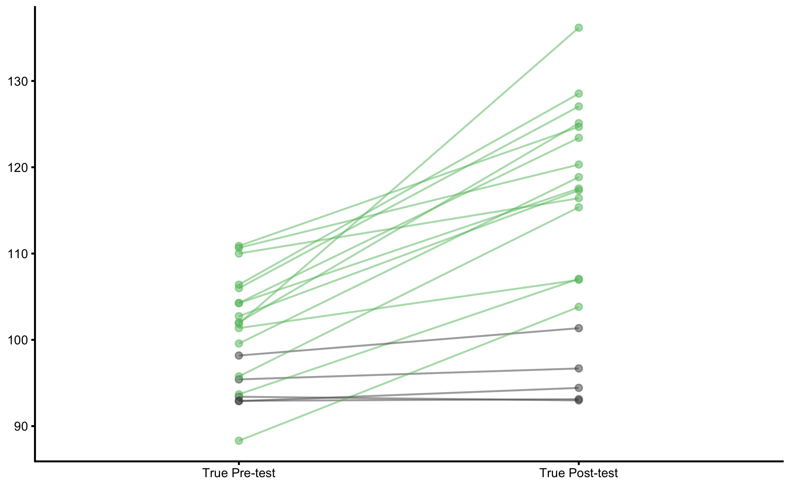
Since there are true changes (systematic and random) in this DGP, estimating mean and SD fo the true Change scores will give us the estimate of the DGP parameters:
To get bootstrap CI around these estimate, we can again use bmbstats::describe_data function:
true_change_analysis <- bmbstats::describe_data(
x = bench_press_data$`Change (true)`,
estimator_function = bmbstats::data_estimators_simple,
control = model_control(
seed = 1667,
boot_type = "perc",
boot_samples = 1000,
confidence = 0.9
)
)
true_change_analysis
#> Bootstrap with 1000 resamples and 90% perc confidence intervals.
#>
#> estimator value lower upper
#> mean 12.829463 9.402614 16.51982
#> SD 9.328114 6.781652 11.06663The true DGP parameters (systematic effect of 10kg and random effect of 10kg) are captured with estimated CIs. Let’s turn to observed scores:
plot_pair_changes(
group_a = bench_press_data$`Pre-test (observed)`,
group_b = bench_press_data$`Post-test (observed)`,
group_a_label = "Observed Pre-test",
group_b_label = "Observed Post-test",
SESOI_lower = -5,
SESOI_upper = 5
)
The image looks similar to true scores analysis. Let’s estimate mean and SD CIs:
obs_change_analysis <- bmbstats::describe_data(
x = bench_press_data$`Change (observed)`,
estimator_function = bmbstats::data_estimators_simple,
control = model_control(
seed = 1667,
boot_type = "perc",
boot_samples = 1000,
confidence = 0.9
)
)
obs_change_analysis
#> Bootstrap with 1000 resamples and 90% perc confidence intervals.
#>
#> estimator value lower upper
#> mean 13.26635 9.829395 17.26567
#> SD 10.32696 7.533166 12.40584As expected, the SD of the observed Change score is more inflated (than SD of the true Change score) due to measurement error. Before dealing with this issue, let’s plot MBI and MET analysis results:
obs_change_MBI <- bmbstats::observations_MBI(
observations = bench_press_data$`Change (observed)`,
observations_label = bench_press_data$Athlete,
measurement_error = 2.5 * sqrt(2),
# Degrees of freedom from the reliability study. Use `Inf` for normal distribution
df = Inf,
SESOI_lower = -5,
SESOI_upper = 5,
confidence = 0.9
)
plot(
obs_change_MBI,
true_observations = bench_press_data$`Change (true)`,
control = plot_control(points_size = 5)
) +
xlim(-10, 65)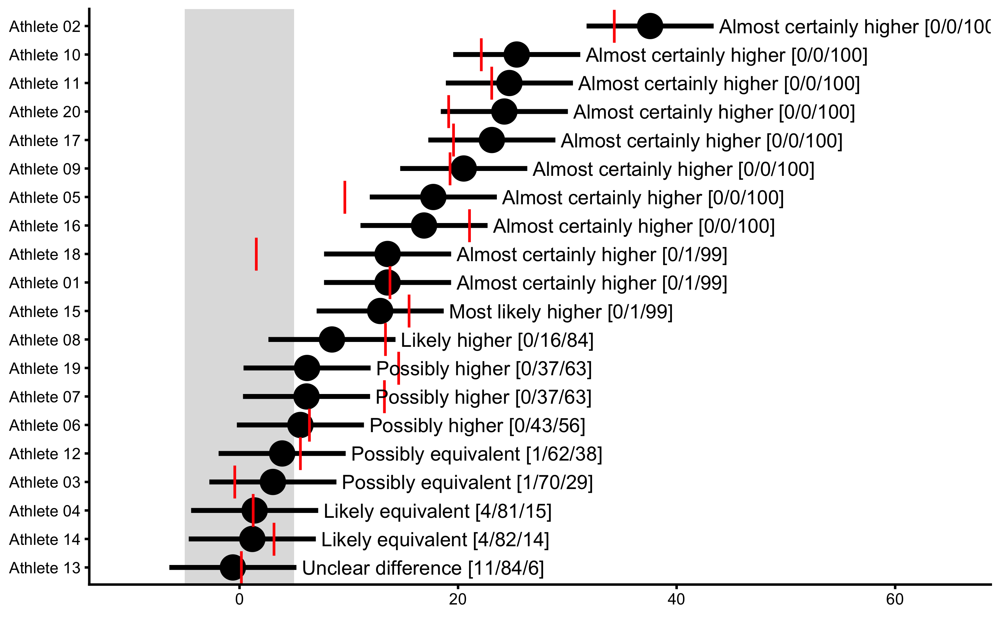
obs_change_MET <- bmbstats::observations_MET(
observations = bench_press_data$`Change (observed)`,
observations_label = bench_press_data$Athlete,
measurement_error = 2.5 * sqrt(2),
# Degrees of freedom from the reliability study. Use `Inf` for normal distribution
df = Inf,
SESOI_lower = -5,
SESOI_upper = 5,
alpha = 0.05 / n_subjects,
# Will adjust CI for plotting as well
confidence = 1 - (0.05 / n_subjects) * 2
)
plot(
obs_change_MET,
true_observations = bench_press_data$`Change (true)`,
control = plot_control(points_size = 5)
) +
xlim(-15, 65)
Before jumping on the responders vs. non-responders bandwagon, it would be wise to check the statistical error committed by Dankel and Loenneke (Dankel and Loenneke 2019) pointed out in the letter-to-the-editor by Tenan et al. (Tenan, Vigotsky, and Caldwell, n.d.). This is a lesson to us all who are trying to come up with a novel analyses, like myself, so I am trying to be very cautious in using any bold statements.
13.5.2 Analysis of the dependent groups using bmbstats::compare_dependent_groups
To perform dependent group comparison, we will use bmbstats::compare_dependent_groups function, and bmbstats::dependent_groups_estimators estimator function. Let’s first do it with the true Pre- and Post- scores:
true_pre_post <- bmbstats::compare_dependent_groups(
pre = bench_press_data$`Pre-test (true)`,
post = bench_press_data$`Post-test (true)`,
SESOI_lower = -5,
SESOI_upper = 5,
estimator_function = bmbstats::dependent_groups_estimators,
control = model_control(
seed = 1667,
boot_type = "perc",
boot_samples = 1000,
confidence = 0.9
)
)
#> [1] "All values of t are equal to 5 \n Cannot calculate confidence intervals"
#> [1] "All values of t are equal to 10 \n Cannot calculate confidence intervals"
true_pre_post
#> Bootstrap with 1000 resamples and 90% perc confidence intervals.
#>
#> estimator value lower upper
#> SESOI lower -5.00000000 -5.000000000 -5.00000000
#> SESOI upper 5.00000000 NA NA
#> SESOI range 10.00000000 NA NA
#> Mean change 12.82946286 9.402614340 16.51981871
#> SD change 9.32811444 6.781651565 11.06663336
#> %CV change 72.70853459 49.485375080 95.21126362
#> % change 12.62276799 9.213352403 16.25417940
#> Ratio 1.12622768 1.092133524 1.16254179
#> Cohen's d 1.95364779 1.371167791 3.03268427
#> CLES 0.81092721 0.738420828 0.90342409
#> OVL 0.32865634 0.129433313 0.49297559
#> Mean change to SESOI 1.28294629 0.940261434 1.65198187
#> SD change to SESOI 0.93281144 0.678165157 1.10666334
#> pLower 0.03558066 0.007004211 0.06858572
#> pEquivalent 0.17027690 0.087087118 0.24817063
#> pHigher 0.79414243 0.691105965 0.90546802
And now with the observed Pre- and Post- scores:
obs_pre_post <- bmbstats::compare_dependent_groups(
pre = bench_press_data$`Pre-test (observed)`,
post = bench_press_data$`Post-test (observed)`,
SESOI_lower = -5,
SESOI_upper = 5,
estimator_function = bmbstats::dependent_groups_estimators,
control = model_control(
seed = 1667,
boot_type = "perc",
boot_samples = 1000,
confidence = 0.9
)
)
#> [1] "All values of t are equal to 5 \n Cannot calculate confidence intervals"
#> [1] "All values of t are equal to 10 \n Cannot calculate confidence intervals"
obs_pre_post
#> Bootstrap with 1000 resamples and 90% perc confidence intervals.
#>
#> estimator value lower upper
#> SESOI lower -5.00000000 -5.00000000 -5.00000000
#> SESOI upper 5.00000000 NA NA
#> SESOI range 10.00000000 NA NA
#> Mean change 13.26634977 9.82939542 17.26567091
#> SD change 10.32696439 7.53316566 12.40584025
#> %CV change 77.84329951 55.95245477 97.95459056
#> % change 13.07536952 9.64149847 17.10620410
#> Ratio 1.13075370 1.09641498 1.17106204
#> Cohen's d 1.73487556 1.23093674 2.63074534
#> CLES 0.80381999 0.73779303 0.88834207
#> OVL 0.38570219 0.18838477 0.53824551
#> Mean change to SESOI 1.32663498 0.98293954 1.72656709
#> SD change to SESOI 1.03269644 0.75331657 1.24058402
#> pLower 0.04648926 0.01380798 0.07714882
#> pEquivalent 0.17017990 0.09737292 0.23894195
#> pHigher 0.78333084 0.69453555 0.88551971
Let’s plot the estimated CIs for all the estimators:
# Plot the estimators
compare_analyses <- rbind(
data.frame(group = "true", true_pre_post$estimators),
data.frame(group = "observed", obs_pre_post$estimators)
)
ggplot(
compare_analyses,
aes(y = group, x = value)
) +
theme_bw(8) +
geom_errorbarh(aes(xmax = upper, xmin = lower),
color = "black",
height = 0
) +
geom_point() +
xlab("") +
ylab("") +
facet_wrap(~estimator, scales = "free_x")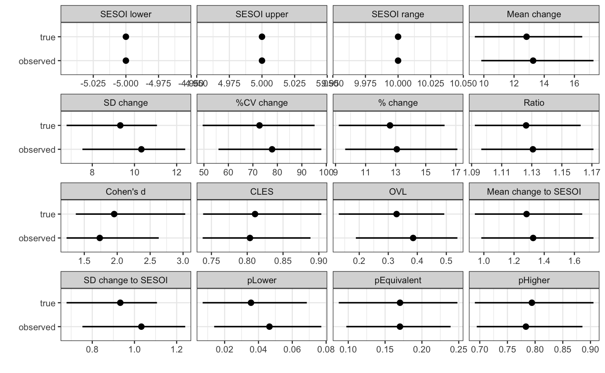
As can be seen on the figure, some estimators (those depending on the SD) are more affected by the measurement error. Since we do not know true scores, we can perform SIMEX analysis on the observed scores, or adjust SD of the change using the change measurement error. Let’s do that by writing our own estimator equation that uses adjustment for the change SD:
adjusted_estimators <- function(pre,
post,
SESOI_lower = 0,
SESOI_upper = 0,
na.rm = FALSE) {
SESOI_range <- SESOI_upper - SESOI_lower
change <- post - pre
mean_change <- mean(change, na.rm = na.rm)
sd_change <- stats::sd(change, na.rm = na.rm)
# Now we adjust the sd_change with the known measurement error
change_measurement_error <- measurement_error * sqrt(2)
sd_change <- sqrt(sd_change^2 - change_measurement_error^2)
cv_change <- 100 * sd_change / mean_change
perc_change <- mean(change / pre, na.rm = na.rm) * 100
ratio <- mean(post / pre, na.rm = na.rm)
cohen <- cohens_d(pre, post, paired = TRUE, na.rm = na.rm)
cles <- CLES(pre, post, na.rm = na.rm)
ovl <- 2 * stats::pnorm(-abs(cohen) / 2)
change_to_SESOI <- mean_change / SESOI_range
sd_change_to_SESOI <- sd_change / SESOI_range
# Calculate proportion of scores
df <- length(change) - 1
higher <- 1 - stats::pt((SESOI_upper - mean_change) / sd_change, df = df)
lower <- stats::pt((SESOI_lower - mean_change) / sd_change, df = df)
equivalent <- 1 - (higher + lower)
c(
"SESOI lower" = SESOI_lower,
"SESOI upper" = SESOI_upper,
"SESOI range" = SESOI_range,
"Mean change" = mean_change,
"SD change" = sd_change,
"%CV change" = cv_change,
"% change" = perc_change,
"Ratio" = ratio,
"Cohen's d" = cohen,
"CLES" = cles,
"OVL" = ovl,
"Mean change to SESOI" = change_to_SESOI,
"SD change to SESOI" = sd_change_to_SESOI,
"pLower" = lower,
"pEquivalent" = equivalent,
"pHigher" = higher
)
}
# ----------------------------------
adj_pre_post <- bmbstats::compare_dependent_groups(
pre = bench_press_data$`Pre-test (observed)`,
post = bench_press_data$`Post-test (observed)`,
SESOI_lower = -5,
SESOI_upper = 5,
estimator_function = adjusted_estimators,
control = model_control(
seed = 1667,
boot_type = "perc",
boot_samples = 1000,
confidence = 0.9
)
)
#> [1] "All values of t are equal to 5 \n Cannot calculate confidence intervals"
#> [1] "All values of t are equal to 10 \n Cannot calculate confidence intervals"
adj_pre_post
#> Bootstrap with 1000 resamples and 90% perc confidence intervals.
#>
#> estimator value lower upper
#> SESOI lower -5.00000000 -5.000000000 -5.00000000
#> SESOI upper 5.00000000 NA NA
#> SESOI range 10.00000000 NA NA
#> Mean change 13.26634977 9.829395423 17.26567091
#> SD change 9.70289614 6.651960703 11.89137806
#> %CV change 73.13915511 50.327816706 93.01853927
#> % change 13.07536952 9.641498467 17.10620410
#> Ratio 1.13075370 1.096414985 1.17106204
#> Cohen's d 1.73487556 1.230936741 2.63074534
#> CLES 0.80381999 0.737793033 0.88834207
#> OVL 0.38570219 0.188384768 0.53824551
#> Mean change to SESOI 1.32663498 0.982939542 1.72656709
#> SD change to SESOI 0.97028961 0.665196070 1.18913781
#> pLower 0.03758233 0.007977625 0.06801839
#> pEquivalent 0.16484497 0.085648118 0.23506532
#> pHigher 0.79757270 0.708039046 0.90137633Now we can add these estimated CI to the graph and compare it with estimates using true and observed scores:
# Plot the estimators
compare_analyses <- rbind(
data.frame(group = "true", true_pre_post$estimators),
data.frame(group = "observed", obs_pre_post$estimators),
data.frame(group = "adjusted", adj_pre_post$estimators)
)
ggplot(
compare_analyses,
aes(y = group, x = value)
) +
theme_bw(8) +
geom_errorbarh(aes(xmax = upper, xmin = lower),
color = "black",
height = 0
) +
geom_point() +
xlab("") +
ylab("") +
facet_wrap(~estimator, scales = "free_x")
To be fair, some estimators like Cohen's d and those depending on it and Pre-test SD were not adjusted (which we can do that too as well), but SD changeand other estimators dependent on that it we adjusted and much closer to the estimates using the true scores.
As explained in the [What to do when we know the error?] section, SIMEX procedure can be implemented as well.
This simple example demonstrates the effect of the measurement error on the estimators and a simple adjustment that could be done to come closer to estimators using true scores for the dependent group analysis. This is very similar to the RCT analysis, where SD of the Control group change scores will be used instead of known measurement error.
13.5.3 Statistical tests
For the sake of example, let’s perform NHST using the mean change estimator estimated using the observed scores:
pre_vs_post_NHST <- bmbstats::bootstrap_NHST(
obs_pre_post,
estimator = "Mean change",
null_hypothesis = 0,
test = "two.sided"
)
pre_vs_post_NHST
#> Null-hypothesis significance test for the `Mean change` estimator
#> Bootstrap result: Mean change=13.266, 90% CI [9.829, 17.266]
#> H0=0, test: two.sided
#> p=0.000999000999000999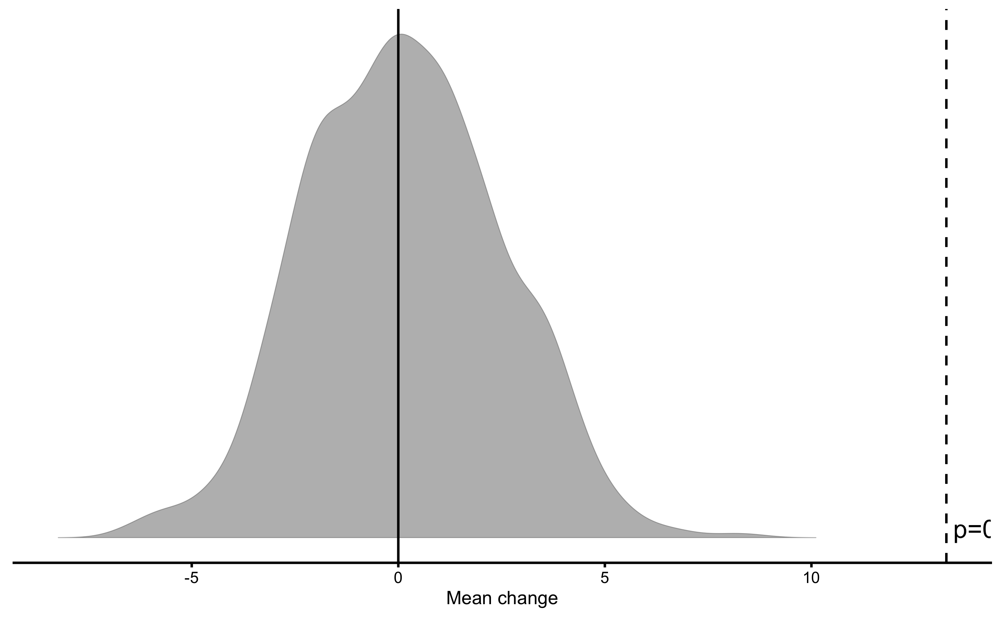
Using SESOI of ±5kg for the mean change estimator as well, let’s do the METs:
pre_vs_post_MET <- bmbstats::bootstrap_MET(
obs_pre_post,
estimator = "Mean change",
SESOI_lower = -5,
SESOI_upper = 5,
alpha = 0.05
)
pre_vs_post_MET
#> Minimum effect tests for the `Mean change` estimator
#> Bootstrap result: Mean change=13.266, 90% CI [9.829, 17.266]
#> SESOI: [-5, 5], alpha=0.05
#>
#> Test p.value
#> inferiority 1.000000000
#> non-superiority 0.999000000
#> equivalence 0.999000000
#> non-inferiority 0.000999001
#> superiority 0.001000000
#>
#> Final inference: Higher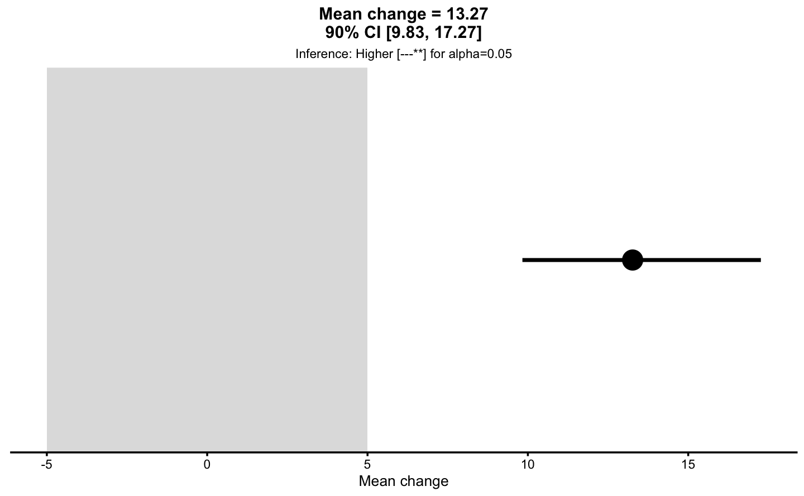
And finally MBI:
pre_vs_post_MBI <- bmbstats::bootstrap_MBI(
obs_pre_post,
estimator = "Mean change",
SESOI_lower = -5,
SESOI_upper = 5
)
pre_vs_post_MBI
#> Magnitude-based inference for the `Mean change` estimator
#> Bootstrap result: Mean change=13.266, 90% CI [9.829, 17.266]
#> SESOI: [-5, 5]
#>
#> Test prob
#> lower 0
#> equivalent 0
#> higher 1
#>
#> Final inference: Almost certainly higher
13.6 Describing relationship between two groups
In [Describing relationship between two variables] section we have used a relationship between YoYoIR1 and MAS. This is how that data is generated, but without rounding (i.e. YoYoIR1 should be rounded to 40m and MAS to 0.5km/h):
set.seed(1667)
n_subjects <- 30
yoyo_mas_data <- tibble(
Athlete = paste(
"Athlete",
str_pad(
string = seq(1, n_subjects),
width = 2,
pad = "0"
)
),
`YoYoIR1` = rnorm(
n = n_subjects,
mean = 1224,
sd = 255
),
`MAS` = 3.6 * (0.456 * `YoYoIR1` / 1000 + 3.617) +
rnorm(n = length(`YoYoIR1`), 0, 0.2)
)
yoyo_mas_data
#> # A tibble: 30 x 3
#> Athlete YoYoIR1 MAS
#> <chr> <dbl> <dbl>
#> 1 Athlete 01 1628. 15.4
#> 2 Athlete 02 1089. 15.0
#> 3 Athlete 03 1438. 15.2
#> 4 Athlete 04 1215. 15.0
#> 5 Athlete 05 967. 14.3
#> 6 Athlete 06 1101. 14.9
#> 7 Athlete 07 1014. 14.5
#> 8 Athlete 08 1424. 15.2
#> 9 Athlete 09 633. 14.1
#> 10 Athlete 10 1348. 14.9
#> # … with 20 more rowsLet’s create a scatter plot with linear regression model using bmbstats::plot_pair_lm, with YoYoIR1 being outcome variable and MAS being predictor, with SESOI being ±40m
bmbstats::plot_pair_lm(
predictor = yoyo_mas_data$MAS,
outcome = yoyo_mas_data$YoYoIR1,
predictor_label = "MAS",
outcome_label = "YoYoIR1",
SESOI_lower = -40,
SESOI_upper = 40
)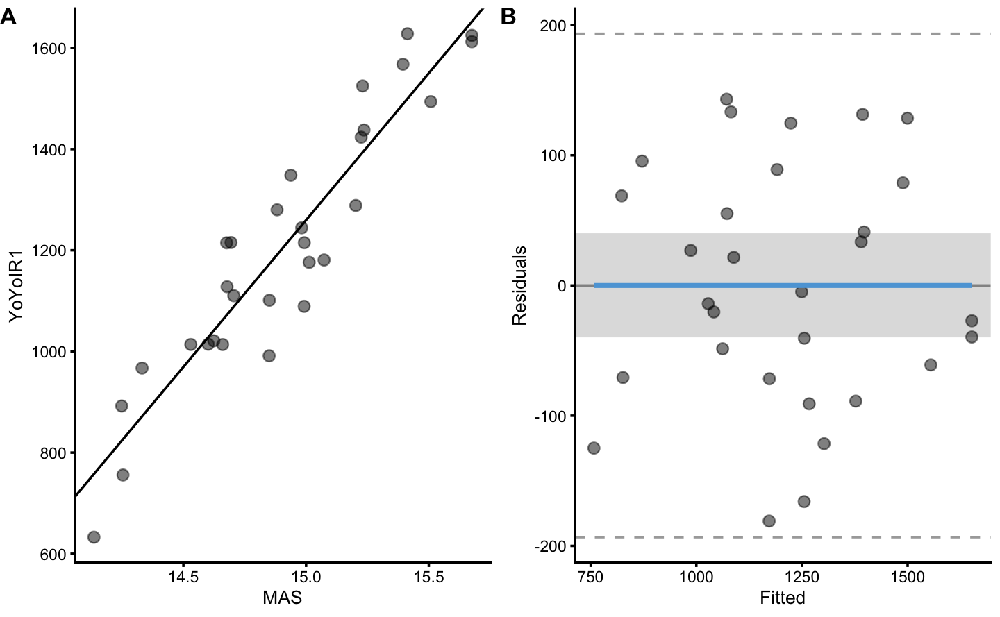
To get bootstrapped CIs of the estimators, use bmbstats::describe_relationship and bmbstats::relationship_lm_estimators functions:
boot_relationship <- bmbstats::describe_relationship(
predictor = yoyo_mas_data$MAS,
outcome = yoyo_mas_data$YoYoIR1,
SESOI_lower = -40,
SESOI_upper = 40,
estimator_function = bmbstats::relationship_lm_estimators,
control = model_control(
seed = 1667,
boot_type = "perc",
boot_samples = 1000,
confidence = 0.9
)
)
#> [1] "All values of t are equal to 40 \n Cannot calculate confidence intervals"
#> [1] "All values of t are equal to 80 \n Cannot calculate confidence intervals"
boot_relationship
#> Bootstrap with 1000 resamples and 90% perc confidence intervals.
#>
#> estimator value lower upper
#> SESOI lower -40.0000000 -40.0000000 -40.0000000
#> SESOI upper 40.0000000 NA NA
#> SESOI range 80.0000000 NA NA
#> Intercept -7452.2295288 -8337.2111534 -6549.1633775
#> Slope 580.8003907 519.2080676 640.5107552
#> RSE 94.5402638 77.0626151 106.8726878
#> Pearson's r 0.9314150 0.8828261 0.9597758
#> R Squared 0.8675339 0.7793820 0.9211695
#> SESOI to RSE 0.8462003 0.7485542 1.0381170
#> PPER 0.3246566 0.2890790 0.3923412
Magnitude-based estimators SESOI to RSE and PPER are useful in judging practical significance of this model, which is this case very bad. For example, if we now use MAS as outcome and YoYoIR1 as predictor with SESOI equal to ±0.5kmh, R Squared and Pearson's r will stay the same, but SESOI to RSE and PPER will demonstrate model that now had much better practical significance:

boot_relationship <- bmbstats::describe_relationship(
outcome = yoyo_mas_data$MAS,
predictor = yoyo_mas_data$YoYoIR1,
SESOI_lower = -0.5,
SESOI_upper = 0.5,
estimator_function = bmbstats::relationship_lm_estimators,
control = model_control(
seed = 1667,
boot_type = "perc",
boot_samples = 1000,
confidence = 0.9
)
)
#> [1] "All values of t are equal to 0.5 \n Cannot calculate confidence intervals"
#> [1] "All values of t are equal to 1 \n Cannot calculate confidence intervals"
boot_relationship
#> Bootstrap with 1000 resamples and 90% perc confidence intervals.
#>
#> estimator value lower upper
#> SESOI lower -0.500000000 -0.50000000 -0.500000000
#> SESOI upper 0.500000000 NA NA
#> SESOI range 1.000000000 NA NA
#> Intercept 13.106232758 12.90779375 13.302068612
#> Slope 0.001493687 0.00134178 0.001654143
#> RSE 0.151611849 0.12399493 0.170447293
#> Pearson's r 0.931415014 0.88282614 0.959775759
#> R Squared 0.867533928 0.77938199 0.921169508
#> SESOI to RSE 6.595790544 5.86691658 8.064845693
#> PPER 0.997419105 0.99351216 0.999633678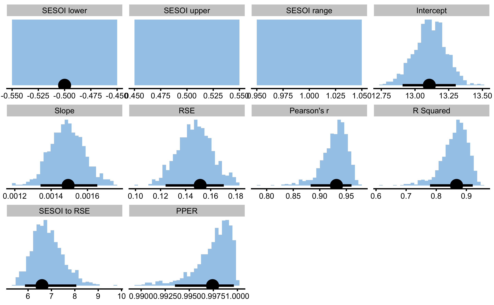
In the next chapter we will continue with the prediction tasks.
References
Dankel, Scott J., and Jeremy P. Loenneke. 2019. “A Method to Stop Analyzing Random Error and Start Analyzing Differential Responders to Exercise.” Sports Medicine, June. https://doi.org/10.1007/s40279-019-01147-0.
Tenan, Matthew, Andrew David Vigotsky, and Aaron R Caldwell. n.d. “On the Statistical Properties of the Dankel-Loenneke Method.” https://doi.org/10.31236/osf.io/8ndhg.
I will refer to
bmbstatsfunctions using prefixbmbstats::although you can use those functions without it↩︎